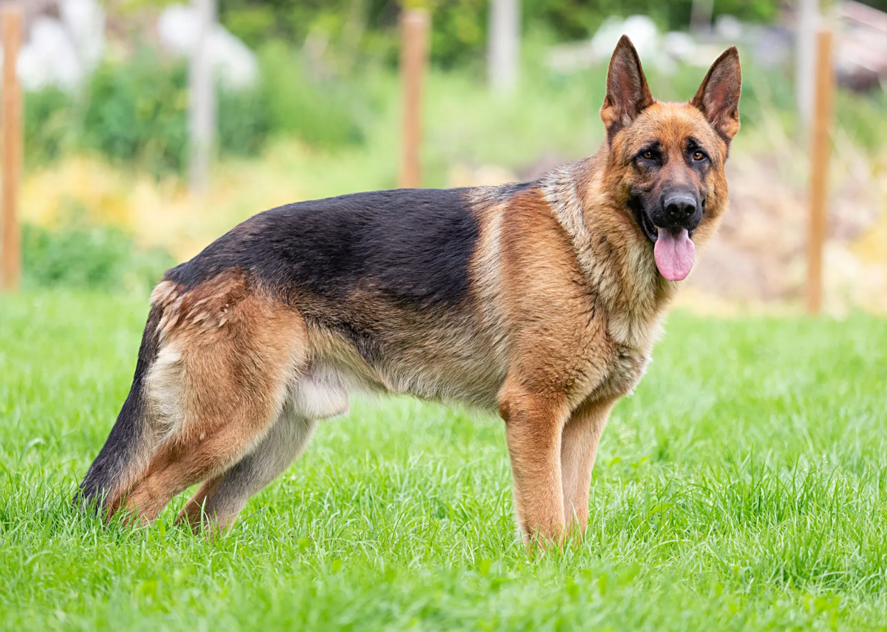

Rottweiler
Weight:
Coat:
Color:
35 - 60 kg
Straight, coarse, medium-length outer coat that lies flat
Black & Rust, Black & Mahogany, Black & Tan
The Rottweiler is a robust working breed of great strength descended from the mastiffs of the Roman legions. A gentle playmate and protector within the family circle, the Rottie observes the outside world with a self-assured aloofness. A male Rottweiler will stand anywhere from 24 to 27 muscular inches at the shoulder; females run a bit smaller and lighter. The glistening, short black coat with smart rust markings add to the picture of imposing strength. A thickly muscled hindquarters powers the Rottie's effortless trotting gait. A well-bred and properly raised Rottie will be calm and confident, courageous but not unduly aggressive. The aloof demeanor these world-class guardians present to outsiders belies the playfulness, and downright silliness, that endear Rotties to their loved ones. (No one told the Rottie he's not a toy breed, so he is liable plop onto your lap for a cuddle.) Early training and socialization will harness a Rottie's territorial instincts in a positive way.
Beagle
Weight:
Coat:
Color:
10 - 11 kg
Short haired, hard coat of medium length
Many colors
The beagle is a breed of small hound that is similar in appearence to the much larger foxhound. The beagle is a scent hound, developed primarily for hunting hare (beagling). With a grtreat sense of smell and superior tracking instinct, the beagle is employed as detection dog for prohibited agricultural imports and foodstuffs in quarantine around the world. The beagle is intelligent but singleminded.It is a popular pet due to its sizem good temper, and lack of inherited health problems.
Poodle
Weight:
Coat:
Color:
Standard: 20 - 32 kg, Medium: 9 - 13 kg, Toy: 2-3 kg;
Curly, Corded, and wavy
Many colors
Poodles are extremely intelligent and are easily trained. They are agile and graceful as well as smart, and they enjoy and excel in a variety of canine sports, including agility, obedience, and tracking. They are excellent water-retrievers and also compete in dock diving and retriever hunt tests.

German sheperd
Weight:
Coat:
Color:
22 - 40 kg
Short, dense and thick, medium thick, thick and fluffy, long, furry around their ears, chest, tail, or on the backs of their legs
Many colors
Generally considered dogkind's finest all-purpose worker, the German Shepherd Dog is a large, agile, muscular dog of noble character and high intelligence. Loyal, confident, courageous, and steady, the German Shepherd is truly a dog lover's delight. German Shepherd Dogs can stand as high as 26 inches at the shoulder and, when viewed in outline, presents a picture of smooth, graceful curves rather than angles. The natural gait is a free-and-easy trot, but they can turn it up a notch or two and reach great speeds. There are many reasons why German Shepherds stand in the front rank of canine royalty, but experts say their defining attribute is character: loyalty, courage, confidence, the ability to learn commands for many tasks, and the willingness to put their life on the line in defense of loved ones. German Shepherds will be gentle family pets and steadfast guardians, but, the breed standard says, there's a 'certain aloofness that does not lend itself to immediate and indiscriminate friendships.